Pix2Pix: Paired Edges, Real U-Net Skips and Conditional Patch Scores
Abstract
A compact paired translator maps binary MNIST Sobel conditions to28x28 grayscale images. Its1390-parameter U-Net has two actual concatenation skips and learned transposed convolutions. A725-parameter conditional PatchGAN scores49 local patches per source/candidate pair. The complete C++ program prepares native data, keeps the paired L1 objective and every D-then-fresh-G update visible, and reproduces the original arrays, derivatives, records and gallery. After three fixed epochs, test L1=.4085 and MSE=.1919 are both worse than the fitting-only mean image (.1518 and.0678). Condition dependence and correct updates do not establish good translation. Hand checks, executed architecture and controlled final-model probes separate what the implementation does from what this short run achieves.
Give G the source alone, and give D a source/candidate pair
[Isola, Zhu, Zhou and Efros, Image-to-Image Translation with Conditional Adversarial Networks (CVPR2017)](https://arxiv.org/abs/1611.07004) combines a conditional adversarial objective with paired reconstruction. This repository uses a small two-level U-Net and an18x18 nominal PatchGAN receptive field on MNIST, without batch normalization or dropout. It does not reproduce the paper's full networks, image tasks or reported benchmarks. All2115 values in16 tensors are caller-owned. Labels identify preview and diagnostic rows; neither network consumes labels or noise. At inference, G needs only the source edge image.
#include <dm/dm.hpp>
int main() {
std::filesystem::create_directories("build");
dm::graphics::Diagram d(48, 1450);
dm::graphics::DiagramNodeStyle a;
a.width = 9;
a.height = 5;
a.font_size = 43;
d.node("source", {-18, 6}, "Source condition c\nQuantized Sobel\n28x28x1", a)
.node("g", {-6, 6}, "U-Net G\nTwo actual skips\n1390 parameters", a)
.node("fake", {6, 6}, "Sigmoid fake G(c)\n28x28x1\nTarget is not input", a)
.node("d", {18, 6}, "D(c,candidate)\n49 raw patch logits\n725 parameters", a)
.node("target", {6, -6}, "Paired target x\nMean L1 to G(c)\nWeight100", a)
.node("schedule", {-6, -6}, "Capture D / step D\nFresh G through D\nCapture G / step G", a)
.edge("source", "g")
.edge("g", "fake")
.edge("fake", "d")
.edge("target", "d")
.edge("fake", "target")
.save_svg("build/pix2pix_method.svg");
}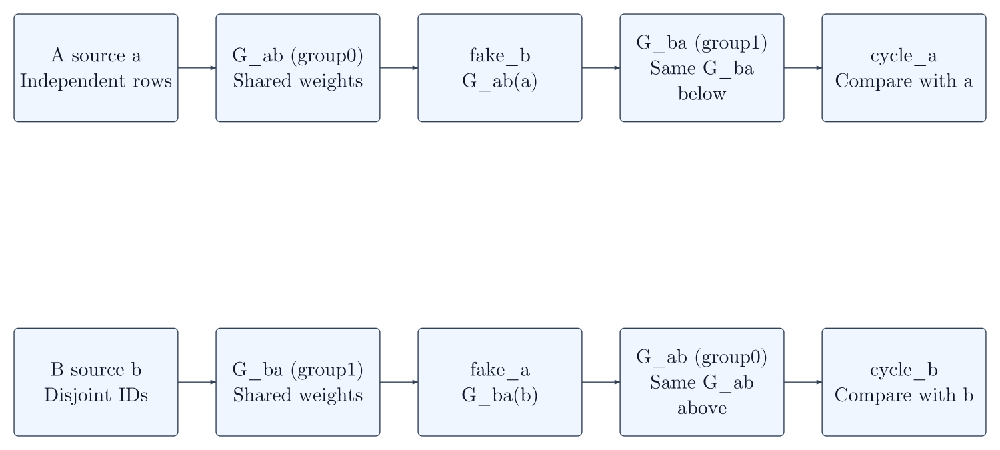
Check quantization, zero padding and the inclusive Sobel threshold
The condition builder first recovers integer pixels as floor(Double(pixel)*255+.5). It applies the raw3x3 Sobel Gx and Gy kernels with zero padding, then sets an edge when abs(Gx)+abs(Gy)>=256. This is a binary L1 magnitude, with no derivative normalization, Euclidean magnitude, border replication or learned edge detector. The Float32 pixel is promoted before multiplication; rounding in Float32 first would change some half-bin decisions. The returned condition is detached.
For a supplied3x3 image with only a central integer intensity q, each of the eight neighbouring pixels has L1 Sobel magnitude2*q, while the center has zero gradient. All eight neighbours therefore switch on at q=128, including equality. The next native tensor sweep checks all256 possible central intensities. An all-white3x3 image has edges on its border because those pixels see the zero padding.
#include <dm/dm.hpp>
int main() {
namespace n = dm::nn;
auto q = n::arange(0, 256, 1, n::DType::Float64);
auto mask = n::tensor({0., 0., 0., 0., 1., 0., 0., 0., 0.}, {1, 3, 3, 1}, n::DType::Float64);
auto x = n::reshape(q / 255., {256, 1, 1, 1}) * mask;
auto edge = n::quantized_sobel_edges(x);
auto counts = n::sum(edge, {1, 2, 3});
if (counts.at({127}) != 0 || counts.at({128}) != 8 ||
n::sum(n::quantized_sobel_edges(n::ones({1, 3, 3, 1}))).item() != 8)
throw std::runtime_error("integer Sobel threshold/borders");
auto p = dm::graphics::RPlot::create();
p.y_limits(-.5, 12)
.lines(
q.to_vector<double>(), counts.to_vector<double>(), "Eight neighbours", {37, 99, 235}, 2)
.x_label("Supplied central integer intensity q; other pixels zero")
.y_label("Number of pixels whose L1 Sobel magnitude is at least256")
.title("An inclusive integer threshold switches at q=128")
.save_svg("build/pix2pix_sobel.svg");
}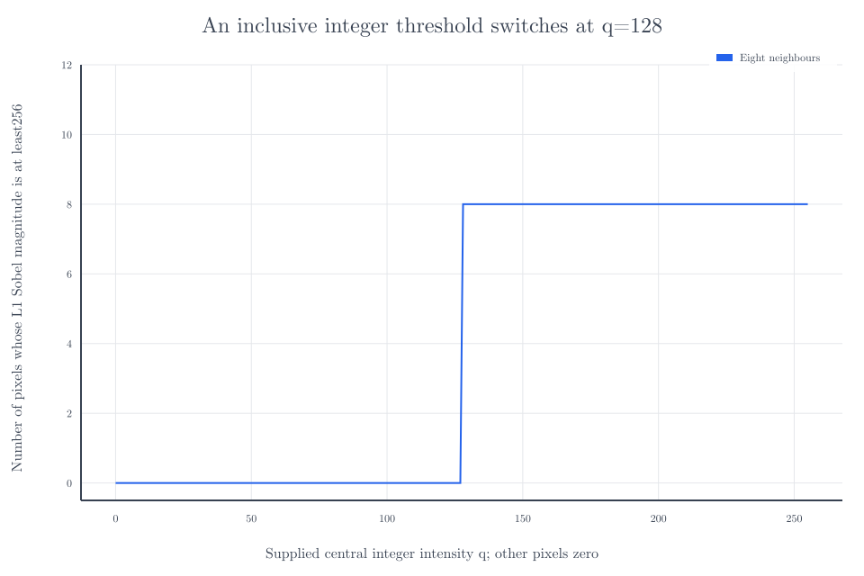
Keep the paired pixel term and its scale explicit
For a supplied target x=.2 and a constant raw discriminator logit0, the G objective is log(2)+100*abs(p-.2). Away from equality, the derivative with respect to p is -100 below.2 and100 above; the core abs subgradient at equality is0. This is a hand check with a supplied constant discriminator, not the fitted image network. It shows the weight100 on a mean absolute pixel error. A sum of784 pixel errors, an MSE or an additional factor.5 would change the source objective.
#include <dm/dm.hpp>
int main() {
namespace n = dm::nn;
std::vector<double> prediction, loss;
for (int k = 0; k <= 20; ++k) {
auto p = n::full({}, k / 20., n::DType::Float64).requires_grad_();
auto value = n::softplus(n::full({}, 0., n::DType::Float64)) + 100 * n::abs(p - .2);
auto gradient = n::grad(value, {p})[0];
double expected = k < 4 ? -100 : k > 4 ? 100 : 0;
if (gradient.item() != expected)
throw std::runtime_error("paired L1 scale/subgradient");
prediction.push_back(p.item());
loss.push_back(value.item());
}
auto plot = dm::graphics::RPlot::create();
plot.y_limits(0, 125)
.lines(prediction, loss, "Paired L1 plus log2", {37, 99, 235}, 2)
.x_label("Supplied prediction p, fixed target.2 and raw D logit0")
.y_label("log(2)+100*absolute paired error")
.title("A mean L1 term keeps its source weight100")
.save_svg("build/pix2pix_l1_toy.svg");
}
Average over all49 patch logits, without halving the D loss
For real and fake raw patch maps r and f, the source objectives are L_D=mean(softplus(-r))+mean(softplus(f)) and L_G=mean(softplus(-f))+100*mean(abs(G(c)-x)). The logistic means reduce all N*49 patch logits. For one image, each fake-logit D partial is sigmoid(f)/49; its adversarial G partial is(sigmoid(f)-1)/49. At zero real/fake logits, L_D=2*log(2), not log(2). The next supplied map checks both49-coordinate partial vectors against those formulas. No image pixels are being classified independently; the learned score receptive fields overlap.
#include <dm/dm.hpp>
int main() {
namespace n = dm::nn;
auto fake =
n::reshape(n::arange(0, 49, 1, n::DType::Float64) / 8. - 3., {1, 7, 7, 1}).requires_grad_();
auto real = n::zeros(fake.shape(), fake.dtype());
auto loss =
n::models::LogisticGanObjectives(n::reshape(real, {-1, 1}), n::reshape(fake, {-1, 1}));
n::GradOptions keep;
keep.retain_graph = true;
auto dd = n::grad(loss.discriminator, {fake}, keep)[0], dg = n::grad(loss.generator, {fake})[0];
if (n::max(n::abs(dd - n::sigmoid(fake) / 49.)).item() > 1e-14 ||
n::max(n::abs(dg - (n::sigmoid(fake) - 1.) / 49.)).item() > 1e-14)
throw std::runtime_error("all49 patch means");
auto plot = dm::graphics::RPlot::create();
plot.y_limits(-.022, .04)
.lines(fake.to_vector<double>(), dd.to_vector<double>(), "D patch partial", {37, 99, 235}, 2)
.lines(fake.to_vector<double>(), dg.to_vector<double>(), "G patch partial", {220, 38, 38}, 2)
.x_label("Supplied fake raw patch logit; one image with49 patches")
.y_label("Objective partial with respect to one patch logit")
.title("Both logistic objectives divide by the full patch count")
.save_svg("build/pix2pix_patch_toy.svg");
}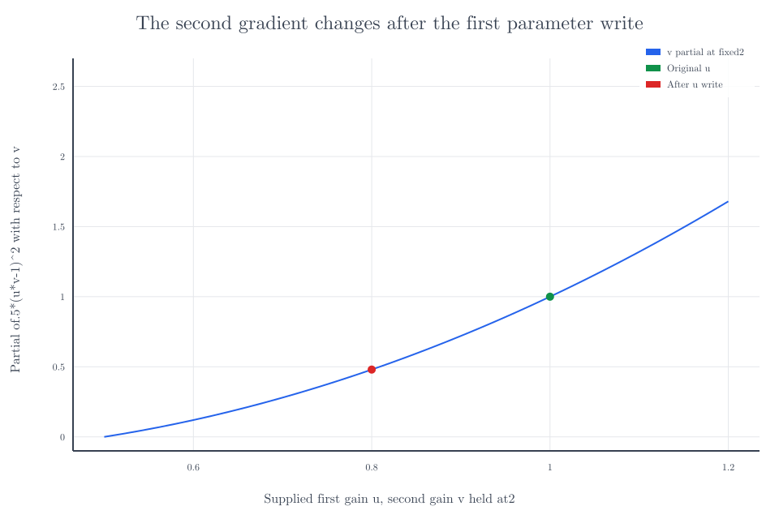
Execute the U-Net architecture and retain both branch inputs
The source28x28x1 passes through4x4 stride2 ReLU maps to14x14x4 and7x7x8. A learned transpose4x4 stride2 ReLU map returns14x14x4. Its channels are concatenated with the first encoder's4 channels, then a second learned transpose returns28x28x2. Those2 channels concatenate with the source itself, followed by a3x3 stride1 sigmoid map to one image channel. Every convolution has normal(.02) kernels and zero bias; source names and creation order preserve initialization. The generator seed is6101. Its ten tensors contain1390 values.
The executed trace names each real boundary and uses multi-input stage markers for both skips. Spatial and channel glyphs share linear scales, with a two-pixel visibility floor and at most six sampled planes. Labels retain exact shapes; the figure is a shape probe, not an additional fit. The conditional D separately uses concat(source,candidate), then4x4/2 leaky.2 maps4/8 and a3x3/1 raw score. Its six tensors contain725 values(seed6113), with49 output logits per image.
#include <dm/dm.hpp>
int main() {
namespace n = dm::nn;
n::ParameterStore p(6101);
n::Module model(
[&](const n::Tensor& source) {
auto out = n::models::Pix2PixGenerate(p, source);
n::model_stage("Down4x4/2 ReLU1→4", source, out.down14);
n::model_stage("Down4x4/2 ReLU4→8", out.down14, out.down7);
n::model_stage("Transpose4x4/2 ReLU8→4", out.down7, out.up14);
n::model_stage(
"Concat up14,down14", std::vector<n::Tensor>{out.up14, out.down14}, out.joined14);
n::model_stage("Transpose4x4/2 ReLU8→2", out.joined14, out.up28);
n::model_stage(
"Concat up28,source", std::vector<n::Tensor>{out.up28, source}, out.joined28);
return n::model_stage("Conv3x3/1 sigmoid3→1", out.joined28, out.image);
},
"Source-only U-Net with both actual concatenation skips");
n::ModelPlotOptions options;
options.style = n::ModelPlotStyle::Flow;
options.detail = n::ModelPlotDetail::Blocks;
options.sizing.spatial_scale = n::ModelPlotScale::Linear;
options.sizing.channel_scale = n::ModelPlotScale::Linear;
options.sizing.minimum_extent = 2;
options.sizing.max_planes = 6;
auto figure = model.plot(n::ones({1, 28, 28, 1}), options);
if (p.count() != 1390 || figure.parameter_count() != 1390)
throw std::runtime_error("executed U-Net census");
figure.save_svg("build/pix2pix_architecture.svg");
std::print("G:10 learned tensors/1390 values; both skip joins retain two inputs.\n");
}G:10 learned tensors/1390 values; both skip joins retain two inputs.
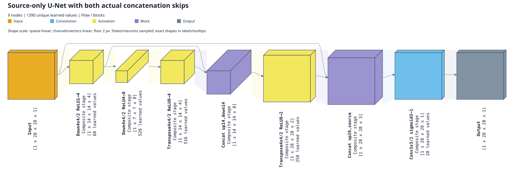
Prepare genuine paired fitting, validation and test images natively
prepare_example_data("mnist-assets",...) creates the canonical saliency pools:
1000 fitting,200 validation and200 test rows. LoadSaliency keeps unit-range
Float32 images, labels and original source IDs. quantized_sobel_edges constructs
conditions independently for each image with the fixed integer transform above.
There is no fitting of edge thresholds or use of held-out labels to build features.
The first fitting example of each label0 through9 appears below, condition then
target. The complete original pools/conditions/labels/IDs are saved in data.npz.
#include <dm/dm.hpp>
namespace n = dm::nn;
namespace m = n::models;
using A = std::map<std::string, n::Tensor>;
A Read(const std::string& file) {
A a;
for (const auto& [k, v] : n::load_npz(file))
a.emplace(k, v);
return a;
}
std::vector<std::int64_t> Balanced(const n::Tensor& labels) {
auto values = labels.to_vector<std::int64_t>();
std::vector<std::int64_t> rows;
for (int c = 0; c < 10; ++c) {
auto it = std::find(values.begin(), values.end(), c);
if (it == values.end())
throw std::runtime_error("all ten preview classes");
rows.push_back(it - values.begin());
}
return rows;
}
void Grid(
const std::string& path,
const std::vector<n::Tensor>& columns,
const std::vector<std::int64_t>& rows) {
std::vector<n::Tensor> panels;
for (auto row : rows)
for (const auto& column : columns)
panels.push_back(n::take_rows(column, {row}));
n::save_image_grid(n::concat(panels, 0), path, columns.size(), 0, 1, 4, 220 / 255., 3);
}
int main() {
auto path = std::filesystem::path(dm::datasets::data_home()) / "saliency";
dm::datasets::prepare_example_data("mnist-assets", path.parent_path());
auto pools = m::LoadSaliency(path);
auto edges = n::quantized_sobel_edges(pools[0].images);
Grid("build/pix2pix_pools.png", {edges, pools[0].images}, Balanced(pools[0].labels));
}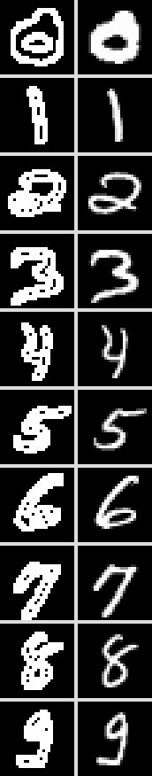
Keep the complete paired fitting loop and each selected write visible
The batch order seed is6121. Each epoch visits every one of the1000 fitting rows, retaining the final8 rows after31 full32-row batches. Three fixed epochs give96 steps per group and192 optimizer writes. Separate Adam states use learning rate .0002,beta1=.5,beta2=.999,epsilon1e-8. Neither a test score nor a validation minimum selects the final epoch. An optional edited init path imports a complete checkpoint; the preserved run uses the stated native seeded initialization.
For each batch the program captures D partials and steps D only. A fresh forward
through that updated D supplies G partials, then G alone steps. Every phase checks
that the other store stays bit exact. Pix2Pix has no fitting loop, optimizer,
implicit no-grad, gradient capture or mutable normalization state. Evaluation
uses an explicit no-grad guard and computes the signed unbiased coarse-pixel IMQ
MMD separately; it is a diagnostic, not a calibrated quality score.
The program preserves all11 original archives/3118891 values, original gallery, three-epoch history, all3000 fitting row visits and non-timing metrics. It also keeps all393 additional phase/probe archives/1673895 values, with each captured derivative and post-write store. Checkpoint restoration initializes independent stores(seed1/2), replaces all16 tensors and verifies every value bit exactly.
#include <dm/dm.hpp>
namespace nn = dm::nn;
namespace m = nn::models;
using Arrays = std::map<std::string, nn::Tensor>;
using nn::Tensor;
namespace {
void Require(bool condition, const std::string& message) {
if (!condition)
throw std::runtime_error(message);
}
void SaveArrays(const std::string& path, const Arrays& a) {
nn::save_npz(path, nn::NamedTensors(a.begin(), a.end()));
}
bool Equal(const Tensor& a, const Tensor& b) {
return nn::equal_bits(a, b);
}
bool Equal(const Arrays& a, const Arrays& b) {
if (a.size() != b.size())
return false;
for (const auto& [key, value] : a)
if (!b.count(key) || !Equal(value, b.at(key)))
return false;
return true;
}
double MaxAbsDiff(const Tensor& a, const Tensor& b) {
return nn::max(nn::abs(nn::cast(a, nn::DType::Float64) - nn::cast(b, nn::DType::Float64))).item();
}
Arrays Fields(const m::Pix2PixOutput& o) {
return {
{"fake", o.fake},
{"real_logit", o.real_logit},
{"fake_logit", o.fake_logit},
{"g_adversarial", o.g_adversarial},
{"l1", o.l1},
{"discriminator_loss", o.discriminator_loss},
{"generator_loss", o.generator_loss}};
}
double Value(const Arrays& a, const std::string& key) {
return a.at(key).item();
}
Tensor Flat784(const Tensor& x) {
return nn::reshape(x, {-1, 784});
}
Tensor Rows(const Tensor& x, const std::vector<std::int64_t>& rows) {
return nn::take_rows(x, rows);
}
void RequireOnlyOwnersChanged(
const Arrays& before,
const Arrays& after,
const std::vector<std::string>& prefixes,
const std::string& message,
bool require_change) {
bool changed = false;
for (const auto& [key, value] : before) {
bool selected = false;
for (const auto& prefix : prefixes)
selected |= key.starts_with(prefix);
if (!Equal(value, after.at(key))) {
Require(selected, message);
changed = true;
}
}
if (require_change)
Require(changed, message + " changed selected values");
}
void Mosaic(const std::filesystem::path& path, const Tensor& images, std::int64_t columns) {
nn::save_image_grid(
nn::reshape(images, {-1, 28, 28, 1}), path.string(), columns, 0, 1, 4, 220 / 255., 3);
}
} // namespace
int main() {
const auto data = std::filesystem::path(dm::datasets::data_home()) / "saliency";
dm::datasets::prepare_example_data("mnist-assets", data.parent_path());
const std::filesystem::path root = "build/pix2pix";
const int epochs = 3;
const std::string init;
const auto pools = m::LoadSaliency(data);
std::filesystem::create_directories(root);
std::vector<Tensor> edges;
Arrays source;
for (int k = 0; k < 3; ++k) {
edges.push_back(nn::quantized_sobel_edges(pools[k].images));
const std::string split = k == 0 ? "fit" : k == 1 ? "validation" : "test";
source.emplace(split + "_images", pools[k].images);
source.emplace(split + "_edges", edges.back());
source.emplace(split + "_labels", pools[k].labels);
source.emplace(split + "_source_ids", pools[k].source);
}
SaveArrays((root / "data.npz").string(), source);
nn::ParameterStore generator(6101), discriminator(6113);
{
nn::NoGradGuard guard;
m::Pix2Pix(generator, discriminator, nn::zeros({1, 28, 28, 1}), nn::zeros({1, 28, 28, 1}));
}
auto snapshot = [&]() {
Arrays a;
for (auto [prefix, store] : std::vector<std::pair<std::string, nn::ParameterStore*>>{
{"0/", &generator}, {"1/", &discriminator}})
for (const auto& name : store->names())
a.emplace(prefix + name, store->at(name).detach().clone());
return a;
};
auto restore = [&](nn::ParameterStore& g, nn::ParameterStore& d, const std::string& path) {
auto arrays = nn::load_npz(path);
Require(arrays.size() == 16, "complete16-leaf checkpoint");
for (const auto& [key, value] : arrays) {
Require(
key.size() > 2 && (key[0] == '0' || key[0] == '1') && key[1] == '/',
"known store prefix");
auto& p = key[0] == '0' ? g : d;
Require(
p.contains(key.substr(2)) && p.at(key.substr(2)).shape() == value.shape(),
"known matching checkpoint tensor");
p.set(key.substr(2), value);
}
};
auto evaluate = [&](const Tensor& x, const Tensor& c) {
nn::NoGradGuard guard;
auto fields = Fields(m::Pix2Pix(generator, discriminator, x, c));
fields.emplace(
"pixel_mmd",
m::ImqMmd(m::GanCoarsePixels(Flat784(x)), m::GanCoarsePixels(Flat784(fields.at("fake"))))
.value);
return fields;
};
nn::OptimizerConfig config;
config.kind = nn::OptimizerKind::Adam;
config.beta1 = .5;
config.beta2 = .999;
config.epsilon = 1e-8;
nn::Optimizer g_adam(generator, .0002, config), d_adam(discriminator, .0002, config);
std::filesystem::create_directories(root / "phases");
if (!init.empty())
restore(generator, discriminator, init);
Require(
generator.count() == 1390 && discriminator.count() == 725 &&
generator.size() + discriminator.size() == 16,
"2115 trainable parameters, 16 tensors");
SaveArrays((root / "initial_arrays.npz").string(), snapshot());
SaveArrays((root / "initial_outputs.npz").string(), evaluate(pools[2].images, edges[2]));
nn::BatchOrder order(1000, 32, 6121);
int steps = 0;
std::ofstream history(root / "history.tsv"), batches(root / "batches.tsv");
history.precision(17);
history << "epoch\tdiscriminator_loss\tgenerator_loss\tg_adversarial\tl1\n";
batches << "epoch\tstep\trow\tsource_id\n";
const auto source_ids = nn::cast(pools[0].source, nn::DType::Int64).to_vector<std::int64_t>();
Tensor first_x, first_c;
const auto started = std::chrono::steady_clock::now();
for (int epoch = 1; epoch <= epochs; ++epoch) {
order.begin_epoch();
for (;;) {
const auto rows = order.next();
if (rows.empty())
break;
const Tensor x = Rows(pools[0].images, rows), c = Rows(edges[0], rows);
if (!steps) {
first_x = x, first_c = c;
SaveArrays((root / "first_batch.npz").string(), {{"target", x}, {"source", c}});
}
for (int group : {1, 0}) {
const auto before = snapshot();
// One current forward for D, then a FRESH forward through updated D for G.
const auto out = m::Pix2Pix(generator, discriminator, x, c);
auto& selected = group == 0 ? generator : discriminator;
nn::GradOptions options;
options.allow_unused = true;
auto gradient = nn::grad(
group == 0 ? out.generator_loss : out.discriminator_loss,
selected.parameters(),
options);
Arrays captured;
for (std::size_t i = 0; i < gradient.size(); ++i) {
if (!gradient[i].defined())
gradient[i] = nn::zeros(selected.at(selected.names()[i]).shape(), selected.dtype());
captured.emplace(std::to_string(group) + "/" + selected.names()[i], gradient[i]);
}
const auto phase = "phase" + std::to_string(2 * steps + (group == 0));
SaveArrays((root / "phases" / (phase + "-gradient.npz")).string(), captured);
(group == 0 ? g_adam : d_adam).step(gradient);
SaveArrays((root / "phases" / (phase + "-after.npz")).string(), snapshot());
RequireOnlyOwnersChanged(
before,
snapshot(),
{std::to_string(group) + "/"},
"Pix2Pix step changes ONLY own group",
!steps);
}
for (auto row : rows)
batches << epoch << '\t' << steps << '\t' << row << '\t' << source_ids[row] << '\n';
++steps;
}
SaveArrays((root / ("probe-epoch" + std::to_string(epoch) + ".npz")).string(), snapshot());
SaveArrays(
(root / ("probe-epoch" + std::to_string(epoch) + "-test.npz")).string(),
evaluate(pools[2].images, edges[2]));
const auto v = evaluate(pools[1].images, edges[1]);
SaveArrays((root / ("probe-epoch" + std::to_string(epoch) + "-validation.npz")).string(), v);
history << epoch;
for (auto key : {"discriminator_loss", "generator_loss", "g_adversarial", "l1"})
history << '\t' << Value(v, key);
history << '\n';
std::cout << "epoch " << epoch << ": D=" << Value(v, "discriminator_loss")
<< ", G=" << Value(v, "generator_loss") << ", paired L1=" << Value(v, "l1")
<< std::endl;
}
const double seconds =
std::chrono::duration<double>(std::chrono::steady_clock::now() - started).count();
const auto checkpoint = (root / "final.npz").string();
Require(
g_adam.iterations() == 96 && d_adam.iterations() == 96, "independent96-step Adam counters");
SaveArrays(checkpoint, snapshot());
nn::ParameterStore restored_g(1), restored_d(2);
{
nn::NoGradGuard guard;
m::Pix2Pix(restored_g, restored_d, nn::zeros({1, 28, 28, 1}), nn::zeros({1, 28, 28, 1}));
}
restore(restored_g, restored_d, checkpoint);
auto restored_arrays = [&]() {
Arrays a;
for (auto [prefix, store] : std::vector<std::pair<std::string, nn::ParameterStore*>>{
{"0/", &restored_g}, {"1/", &restored_d}})
for (const auto& name : store->names())
a.emplace(prefix + name, store->at(name).detach().clone());
return a;
};
auto restored_evaluate = [&](const Tensor& x, const Tensor& c) {
nn::NoGradGuard guard;
auto fields = Fields(m::Pix2Pix(restored_g, restored_d, x, c));
fields.emplace(
"pixel_mmd",
m::ImqMmd(m::GanCoarsePixels(Flat784(x)), m::GanCoarsePixels(Flat784(fields.at("fake"))))
.value);
return fields;
};
auto sample = [&](const Tensor& c) {
nn::NoGradGuard guard;
return m::Pix2PixGenerate(restored_g, c).image;
};
auto score_pair = [&](const Tensor& c, const Tensor& x) {
nn::NoGradGuard guard;
return m::Pix2PixDiscriminate(restored_d, c, x);
};
Require(Equal(snapshot(), restored_arrays()), "all G/D vars restore exact");
for (int group = 0; group < 2; ++group) {
auto out = m::Pix2Pix(generator, discriminator, first_x, first_c);
auto& selected = group == 0 ? generator : discriminator;
nn::GradOptions options;
options.allow_unused = true;
auto gradients = nn::grad(
group == 0 ? out.generator_loss : out.discriminator_loss, selected.parameters(), options);
Arrays fields;
for (std::size_t i = 0; i < gradients.size(); ++i)
fields.emplace(
std::to_string(group) + "/" + selected.names()[i],
gradients[i].defined()
? gradients[i]
: nn::zeros(selected.at(selected.names()[i]).shape(), selected.dtype()));
SaveArrays(
(root / ("final_gradients_group" + std::to_string(group) + ".npz")).string(), fields);
}
const auto before = restored_arrays();
const auto output = restored_evaluate(pools[2].images, edges[2]);
const Tensor repeat = sample(edges[2]);
Require(Equal(repeat, output.at("fake")), "SOURCE ONLY translation without TARGET exact");
const double parity = MaxAbsDiff(sample(Rows(edges[2], {0})), Rows(repeat, {0}));
Require(parity < 2e-6, "single/batch parity");
const Tensor zeros = nn::zeros(edges[2].shape());
const Tensor blank = sample(zeros), wrong_pair = score_pair(zeros, pools[2].images),
pair = score_pair(edges[2], pools[2].images);
Require(Equal(pair, output.at("real_logit")), "source+target ONLY PatchD parity");
const double g_effect = MaxAbsDiff(repeat, blank), d_effect = MaxAbsDiff(pair, wrong_pair);
Require(g_effect > 1e-6 && d_effect > 1e-6, "BOTH G and D depend on SOURCE");
SaveArrays(
(root / "condition_controls.npz").string(),
{{"zero_source", zeros},
{"zero_source_prediction", blank},
{"zero_source_real_logits", wrong_pair}});
Require(Equal(before, restored_arrays()), "immutable Pix2Pix inference");
SaveArrays((root / "outputs.npz").string(), output);
const Tensor baseline = nn::reshape(
nn::tile(nn::mean(Flat784(pools[0].images), {0}, true), {200, 1}), {200, 28, 28, 1});
SaveArrays((root / "fit_mean_baseline.npz").string(), {{"image", baseline}});
const auto pred = nn::cast(repeat, nn::DType::Float64),
base = nn::cast(baseline, nn::DType::Float64),
truth = nn::cast(pools[2].images, nn::DType::Float64);
const double mse = nn::mean(nn::square(pred - truth)).item(),
l1 = nn::mean(nn::abs(pred - truth)).item();
const double base_mse = nn::mean(nn::square(base - truth)).item(),
base_l1 = nn::mean(nn::abs(base - truth)).item();
std::vector<Tensor> gallery_rows;
for (std::int64_t b = 0; b < 10; ++b)
for (const Tensor* t :
std::vector<const Tensor*>{&edges[2], &pools[2].images, &repeat, &baseline})
gallery_rows.push_back(Flat784(Rows(*t, {b})));
const Tensor gallery = nn::concat(gallery_rows, 0);
SaveArrays((root / "gallery.npz").string(), {{"images", gallery}});
Mosaic(root / "paired_examples.png", gallery, 4);
std::ofstream meta(root / "metrics.json");
meta.precision(17);
meta << "{\"parameters\":2115,\"epochs\":" << epochs << ",\"steps_per_group\":" << steps
<< ",\"optimizer_updates\":" << 2 * steps << ",\"selected_epoch_fixed_final\":" << epochs
<< ",\"test_l1\":" << l1 << ",\"test_mse\":" << mse << ",\"fit_mean_l1\":" << base_l1
<< ",\"fit_mean_mse\":" << base_mse << ",\"source_generator_max_effect\":" << g_effect
<< ",\"source_discriminator_max_effect\":" << d_effect
<< ",\"single_batch_max_error\":" << parity;
for (auto key : {"discriminator_loss", "generator_loss", "g_adversarial"})
meta << ",\"test_" << key << "\":" << Value(output, key);
meta << ",\"training_seconds\":" << seconds << "}\n";
Require(bool(meta) && bool(history) && bool(batches), "complete Pix2Pix records");
meta.close();
history.close();
batches.close();
std::cout << "fixed final=" << epochs << ", test L1=" << l1 << ", MSE=" << mse
<< ", mean baseline L1/MSE=" << base_l1 << "/" << base_mse
<< ", test D/G=" << Value(output, "discriminator_loss") << "/"
<< Value(output, "generator_loss")
<< "; source only/conditional PatchGAN/restore/immutable PASS (training " << seconds
<< " s)\nArtifacts: " << root.string() << "\nAll pix2pix checks passed.\n";
std::ifstream file(root / "history.tsv");
std::string header;
std::getline(file, header);
std::vector<double> plot_epochs, model_l1, mean_l1;
double epoch, dl, gl, adversarial, error;
auto mean_validation = nn::reshape(
nn::tile(nn::mean(Flat784(pools[0].images), {0}, true), {200, 1}), {200, 28, 28, 1});
double mean_error = nn::mean(
nn::abs(
nn::cast(mean_validation, nn::DType::Float64) -
nn::cast(pools[1].images, nn::DType::Float64)))
.item();
while (file >> epoch >> dl >> gl >> adversarial >> error) {
plot_epochs.push_back(epoch);
model_l1.push_back(error);
mean_l1.push_back(mean_error);
}
auto learning = dm::graphics::RPlot::create();
learning.y_limits(0, .75)
.lines(plot_epochs, model_l1, "Model validation", {37, 99, 235}, 2)
.points(plot_epochs, model_l1, "", {37, 99, 235}, 4)
.lines(plot_epochs, mean_l1, "Fit-mean baseline", {220, 38, 38}, 2)
.x_label("Completed epoch; fixed final3, without early stopping")
.y_label("Validation mean absolute pixel error, unit pixels")
.title("Three epochs still trail the fitting-only mean image")
.save_svg("build/pix2pix_learning.svg");
}epoch 1: D=1.37487, G=47.8422, paired L1=0.471372 epoch 2: D=1.29983, G=46.9446, paired L1=0.461563 epoch 3: D=1.26117, G=41.3895, paired L1=0.405885 fixed final=3, test L1=0.408498, MSE=0.191904, mean baseline L1/MSE=0.151757/0.0677981, test D/G=1.26889/41.6462; source only/conditional PatchGAN/restore/immutable PASS (training 1.22487 s) Artifacts: build/pix2pix All pix2pix checks passed.
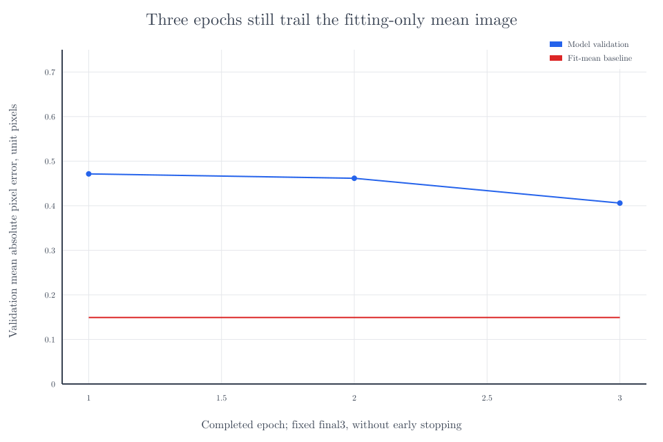
Preserve the original gallery, then broaden its class coverage
The next image preserves the original PNG bytes. Its ten rows are the first ten test cases, which are all label0 in the class-ordered pool. It therefore does not cover all digit classes. Columns are source edge,target,final prediction and the fitting-only mean image. The predictions are weak, gray and spatially coarse; there is no convergence or successful translation claim.
#include <dm/dm.hpp>
int main() {
std::filesystem::copy_file(
"build/pix2pix/paired_examples.png",
"build/pix2pix_original_gallery.png",
std::filesystem::copy_options::overwrite_existing);
}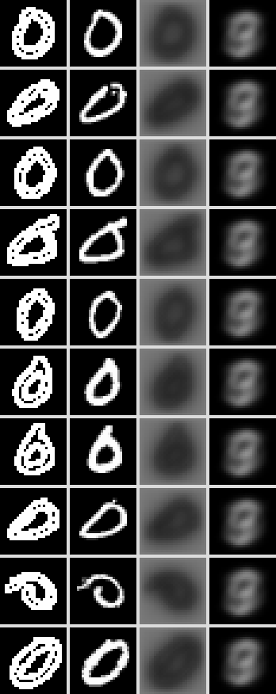
#include <dm/dm.hpp>
namespace n = dm::nn;
namespace m = n::models;
using A = std::map<std::string, n::Tensor>;
A Read(const std::string& file) {
A a;
for (const auto& [k, v] : n::load_npz(file))
a.emplace(k, v);
return a;
}
std::vector<std::int64_t> Balanced(const n::Tensor& labels) {
auto values = labels.to_vector<std::int64_t>();
std::vector<std::int64_t> rows;
for (int c = 0; c < 10; ++c) {
auto it = std::find(values.begin(), values.end(), c);
if (it == values.end())
throw std::runtime_error("all ten preview classes");
rows.push_back(it - values.begin());
}
return rows;
}
void Grid(
const std::string& path,
const std::vector<n::Tensor>& columns,
const std::vector<std::int64_t>& rows) {
std::vector<n::Tensor> panels;
for (auto row : rows)
for (const auto& column : columns)
panels.push_back(n::take_rows(column, {row}));
n::save_image_grid(n::concat(panels, 0), path, columns.size(), 0, 1, 4, 220 / 255., 3);
}
int main() {
auto data = Read("build/pix2pix/data.npz"), out = Read("build/pix2pix/outputs.npz"),
baseline = Read("build/pix2pix/fit_mean_baseline.npz");
Grid(
"build/pix2pix_balanced.png",
{data.at("test_edges"), data.at("test_images"), out.at("fake"), baseline.at("image")},
Balanced(data.at("test_labels")));
}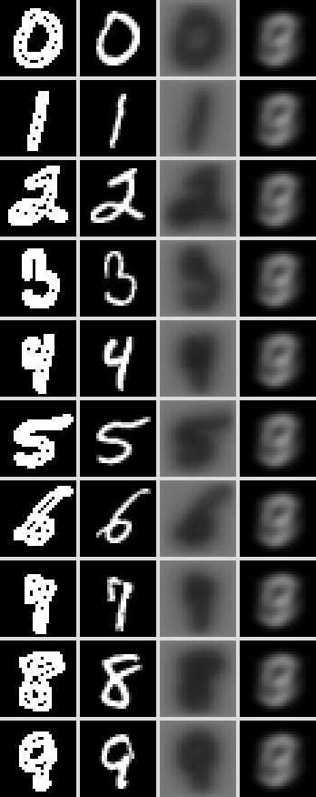
Hold final weights and targets fixed while blanking only the condition
The source-only generator prediction and its zero-source counterfactual differ by at most.324878186. D's real-target patch logits change by at most1.047154665 when that same condition is blanked. These controls prove that both maps depend on the source; they do not establish accurate paired reconstruction. All200-row blank conditions,predictions and real-target logits are preserved. Inference and these controls leave both restored stores unchanged, and single/batch generation agrees exactly.
#include <dm/dm.hpp>
namespace n = dm::nn;
namespace m = n::models;
using A = std::map<std::string, n::Tensor>;
A Read(const std::string& file) {
A a;
for (const auto& [k, v] : n::load_npz(file))
a.emplace(k, v);
return a;
}
std::vector<std::int64_t> Balanced(const n::Tensor& labels) {
auto values = labels.to_vector<std::int64_t>();
std::vector<std::int64_t> rows;
for (int c = 0; c < 10; ++c) {
auto it = std::find(values.begin(), values.end(), c);
if (it == values.end())
throw std::runtime_error("all ten preview classes");
rows.push_back(it - values.begin());
}
return rows;
}
void Grid(
const std::string& path,
const std::vector<n::Tensor>& columns,
const std::vector<std::int64_t>& rows) {
std::vector<n::Tensor> panels;
for (auto row : rows)
for (const auto& column : columns)
panels.push_back(n::take_rows(column, {row}));
n::save_image_grid(n::concat(panels, 0), path, columns.size(), 0, 1, 4, 220 / 255., 3);
}
int main() {
auto data = Read("build/pix2pix/data.npz"), out = Read("build/pix2pix/outputs.npz"),
controls = Read("build/pix2pix/condition_controls.npz");
auto difference = n::abs(out.at("fake") - controls.at("zero_source_prediction"));
Grid(
"build/pix2pix_conditions.png",
{out.at("fake"), controls.at("zero_source_prediction"), difference},
Balanced(data.at("test_labels")));
}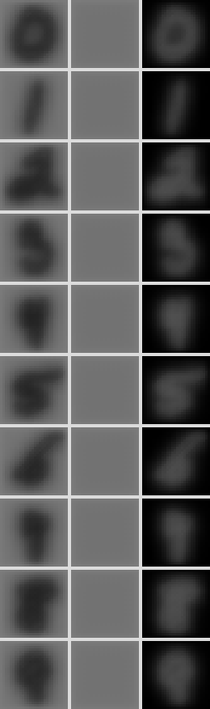
#include <dm/dm.hpp>
namespace n = dm::nn;
namespace m = n::models;
using A = std::map<std::string, n::Tensor>;
A Read(const std::string& file) {
A a;
for (const auto& [k, v] : n::load_npz(file))
a.emplace(k, v);
return a;
}
std::vector<std::int64_t> Balanced(const n::Tensor& labels) {
auto values = labels.to_vector<std::int64_t>();
std::vector<std::int64_t> rows;
for (int c = 0; c < 10; ++c) {
auto it = std::find(values.begin(), values.end(), c);
if (it == values.end())
throw std::runtime_error("all ten preview classes");
rows.push_back(it - values.begin());
}
return rows;
}
void Grid(
const std::string& path,
const std::vector<n::Tensor>& columns,
const std::vector<std::int64_t>& rows) {
std::vector<n::Tensor> panels;
for (auto row : rows)
for (const auto& column : columns)
panels.push_back(n::take_rows(column, {row}));
n::save_image_grid(n::concat(panels, 0), path, columns.size(), 0, 1, 4, 220 / 255., 3);
}
int main() {
auto out = Read("build/pix2pix/outputs.npz"),
controls = Read("build/pix2pix/condition_controls.npz");
auto real = n::select(out.at("real_logit"), 0, 0).to_vector<double>(),
blank = n::select(controls.at("zero_source_real_logits"), 0, 0).to_vector<double>();
std::vector<double> patch(49);
std::iota(patch.begin(), patch.end(), 0.);
double low = 0, high = 0;
for (auto* values : {&real, &blank})
for (double value : *values) {
low = std::min(low, value);
high = std::max(high, value);
}
double range = std::max(1e-8, high - low);
auto p = dm::graphics::RPlot::create();
p.y_limits(low - .1 * range, high + .6 * range)
.lines(patch, real, "Real condition", {37, 99, 235}, 2)
.lines(patch, blank, "Blank condition", {220, 38, 38}, 2)
.x_label("First real test target; flattened7x7 patch coordinate")
.y_label("Raw conditional D logit, not a pixel probability")
.title("The same real target gets different conditional patch scores")
.save_svg("build/pix2pix_patch_controls.svg");
}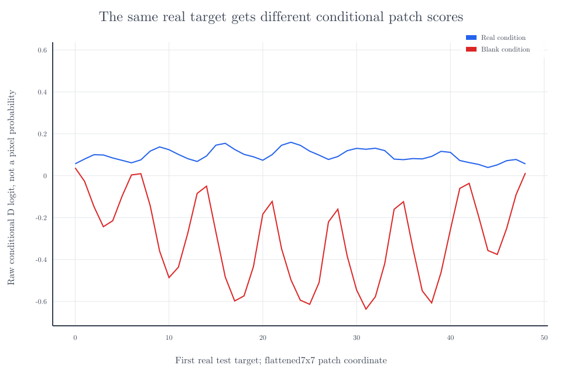
Inspect the actual final skip activations
The following probe restores G and evaluates the first eight test conditions. It saves all65856 values across the seven actual encoder/decoder/skip/image boundaries. The RMS plot uses every value at each boundary, with a log10 axis. Concatenation retains channels from both branches; averaging their channels or adding the two inputs would change the network. These are feature amplitudes, not importance scores or evidence that a skip is necessary for good predictions.
#include <dm/dm.hpp>
namespace n = dm::nn;
namespace m = n::models;
using A = std::map<std::string, n::Tensor>;
A Read(const std::string& file) {
A a;
for (const auto& [k, v] : n::load_npz(file))
a.emplace(k, v);
return a;
}
std::vector<std::int64_t> Balanced(const n::Tensor& labels) {
auto values = labels.to_vector<std::int64_t>();
std::vector<std::int64_t> rows;
for (int c = 0; c < 10; ++c) {
auto it = std::find(values.begin(), values.end(), c);
if (it == values.end())
throw std::runtime_error("all ten preview classes");
rows.push_back(it - values.begin());
}
return rows;
}
void Grid(
const std::string& path,
const std::vector<n::Tensor>& columns,
const std::vector<std::int64_t>& rows) {
std::vector<n::Tensor> panels;
for (auto row : rows)
for (const auto& column : columns)
panels.push_back(n::take_rows(column, {row}));
n::save_image_grid(n::concat(panels, 0), path, columns.size(), 0, 1, 4, 220 / 255., 3);
}
int main() {
auto checkpoint = Read("build/pix2pix/final.npz"), data = Read("build/pix2pix/data.npz");
n::ParameterStore g(1);
n::NoGradGuard guard;
m::Pix2PixGenerate(g, n::ones({1, 28, 28, 1}));
for (auto& [key, value] : checkpoint)
if (key.starts_with("0/"))
g.set(key.substr(2), value);
auto out = m::Pix2PixGenerate(g, n::slice_axis(data.at("test_edges"), 0, 0, 8));
A fields{
{"down14", out.down14},
{"down7", out.down7},
{"up14", out.up14},
{"joined14", out.joined14},
{"up28", out.up28},
{"joined28", out.joined28},
{"image", out.image}};
n::save_npz(
"build/pix2pix/probe-generator-skips.npz", n::NamedTensors(fields.begin(), fields.end()));
std::vector<double> index, rms;
int k = 0;
for (auto name : {"down14", "down7", "up14", "joined14", "up28", "joined28", "image"}) {
index.push_back(++k);
rms.push_back(
std::log10(
std::max(
1e-30,
std::sqrt(
n::mean(n::square(n::cast(fields.at(name), n::DType::Float64))).item()))));
}
auto bounds = std::minmax_element(rms.begin(), rms.end());
auto p = dm::graphics::RPlot::create();
p.y_limits(*bounds.first - .5, *bounds.second + 2)
.points(index, rms, "Final RMS", {37, 99, 235}, 4)
.x_label("1 down14;2 down7;3 up14;4 join14;5 up28;6 join28;7 image")
.y_label("log10 RMS of every value at the executed boundary")
.title("Actual concatenation boundaries preserve both feature banks")
.save_svg("build/pix2pix_skips.svg");
}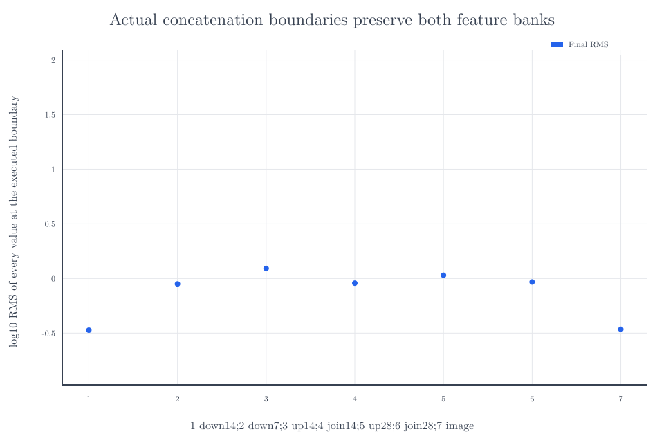
Compare paired error across all ten held-out classes
All200 test rows enter the final aggregate: model L1=.408497557 and MSE=.191904112, compared with fitting-only mean L1=.151756616 and MSE=.067798074. The next diagnostic averages pixel errors within each of the ten 20-row test classes. It uses labels only after the fixed final checkpoint, for reporting. It does not change the objective, train a classifier, select an epoch or imply that overlapping patch scores are calibrated probabilities.
#include <dm/dm.hpp>
namespace n = dm::nn;
namespace m = n::models;
using A = std::map<std::string, n::Tensor>;
A Read(const std::string& file) {
A a;
for (const auto& [k, v] : n::load_npz(file))
a.emplace(k, v);
return a;
}
std::vector<std::int64_t> Balanced(const n::Tensor& labels) {
auto values = labels.to_vector<std::int64_t>();
std::vector<std::int64_t> rows;
for (int c = 0; c < 10; ++c) {
auto it = std::find(values.begin(), values.end(), c);
if (it == values.end())
throw std::runtime_error("all ten preview classes");
rows.push_back(it - values.begin());
}
return rows;
}
void Grid(
const std::string& path,
const std::vector<n::Tensor>& columns,
const std::vector<std::int64_t>& rows) {
std::vector<n::Tensor> panels;
for (auto row : rows)
for (const auto& column : columns)
panels.push_back(n::take_rows(column, {row}));
n::save_image_grid(n::concat(panels, 0), path, columns.size(), 0, 1, 4, 220 / 255., 3);
}
int main() {
auto data = Read("build/pix2pix/data.npz"), out = Read("build/pix2pix/outputs.npz"),
baseline = Read("build/pix2pix/fit_mean_baseline.npz");
auto labels = data.at("test_labels").to_vector<std::int64_t>();
auto truth = n::cast(data.at("test_images"), n::DType::Float64),
fake = n::cast(out.at("fake"), n::DType::Float64),
mean = n::cast(baseline.at("image"), n::DType::Float64);
std::vector<double> classes, model_l1, mean_l1;
for (int c = 0; c < 10; ++c) {
std::vector<std::int64_t> rows;
for (std::size_t i = 0; i < labels.size(); ++i)
if (labels[i] == c)
rows.push_back(i);
if (rows.size() != 20)
throw std::runtime_error("twenty held-out rows per class");
classes.push_back(c);
model_l1.push_back(n::mean(n::abs(n::take_rows(fake - truth, rows))).item());
mean_l1.push_back(n::mean(n::abs(n::take_rows(mean - truth, rows))).item());
}
n::save_npz(
"build/pix2pix/probe-class-errors.npz",
{{"model_l1", n::from_vector(model_l1, {10})}, {"mean_l1", n::from_vector(mean_l1, {10})}});
auto p = dm::graphics::RPlot::create();
p.y_limits(0, .7)
.lines(classes, model_l1, "Model L1", {37, 99, 235}, 2)
.points(classes, model_l1, "", {37, 99, 235}, 4)
.lines(classes, mean_l1, "Fit-mean L1", {220, 38, 38}, 2)
.points(classes, mean_l1, "", {220, 38, 38}, 4)
.x_label("Diagnostic test digit label;20 paired rows per class")
.y_label("Mean absolute error over every class pixel, unit range")
.title("The fitting-only mean remains the stronger reference here")
.save_svg("build/pix2pix_class_errors.svg");
}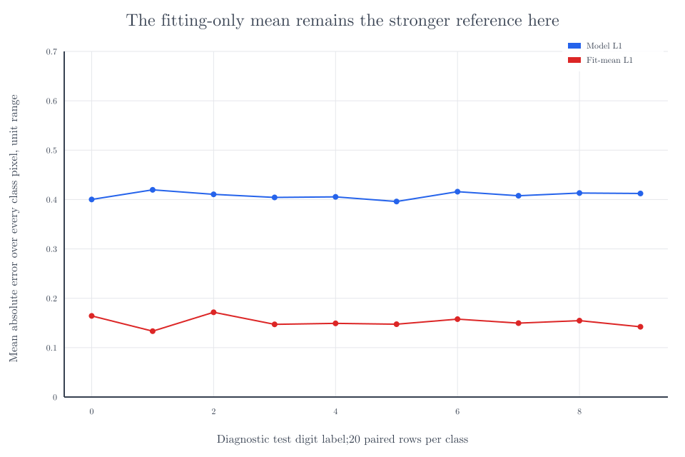
State what the preserved arithmetic establishes
The independent NumPy checker verifies all1097600 binary condition pixels, 205155 captured parameter derivatives(maximum discrepancy1.22e-6),1577832 forward values(maximum6.01e-6),43 representative final scalar finite differences and all192 Adam transitions bit exactly. All3000 fitting row visits and every phase's unselected store are checked. Native delegation and the report reproduce the full original artifacts and every additional phase/probe archive exactly.
These checks establish the intended computation and schedule. They do not convert the weak three-epoch result into a good translator. The fixed-final metrics, original gallery, ten-class preview, blank-condition controls, fitting-only mean and complete editable C++ program remain together so that the limitation is visible.